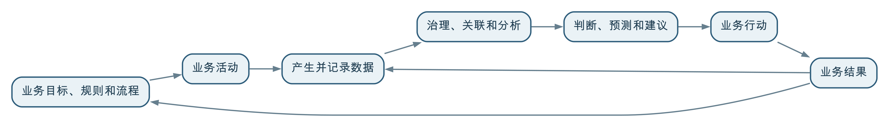

业务活动产生数据并赋予数据含义，数据则对业务进行记录、描述和度量，并通过跨环节关联、分析和反馈帮助业务持续改进。数据不是业务本身，而是业务事实在特定规则、时间和颗粒度下的表达；只有回到业务语境并进入业务行动，数据才可能产生价值。
没有业务活动，数据往往失去来源和含义；没有可靠数据，业务也很难看清整体状况、总结规律和验证改进效果。两者不是“业务在前、数据在后”的单向关系，而是一个持续循环：业务产生数据，数据反映业务，数据应用推动行动，新的业务结果又形成新的数据。
数据治理的作用，就是让这条循环中的含义、关联、质量、责任和反馈长期保持可靠。
业务是组织为了实现目标而持续开展的活动及其规则。例如：
业务不仅是操作流程，还包括：
理解数据以前，需要先理解这些业务对象、事件、规则和目标。脱离业务语境，仅从表名、字段名和数据类型出发，很难准确判断数据代表什么。
业务活动发生以后，可以通过文字、数字、时间、位置、图片、声音、状态和关系等形式被记录下来，这些记录形成数据。
例如，一次商品销售可能形成：
这些数据从不同角度表达同一项业务活动。任何一个字段都不是业务活动的全部，多个系统中的记录也可能分别表达不同阶段的事实。
因此，常说“数据是业务的数字化映射”是有道理的，但还需要补充三个限定：
数据可以反映业务，却不是对现实世界完整、永久和无偏差的复制。
同一个数值，脱离业务规则可能没有明确意义。例如系统中出现数字“100”，它可能是订单数量、合同金额、库存件数、面积、评分或百分比。即使字段名写着“金额”，仍然需要知道：
数据含义来自业务对象、事件和规则，而不是来自数据库字段本身。技术人员可以识别字段类型和统计分布，却不能仅凭这些信息决定“什么是有效合同”“何时算作完成交付”或“哪块土地属于低效用地”。
这也是为什么业务人员必须参与数据治理。数据标准、指标口径、质量要求和模型关系，最终都需要业务事实和业务规则作为依据。
很多数据问题表面上出现在报表或数据仓库中，根源却在业务过程。
例如：
后续可以通过清洗、映射和算法修补一部分问题，但无法凭空恢复从未记录的业务事实，也很难长期替代源头流程整改。
因此，数据质量不只是数据团队的工作。要提高数据质量，往往需要同步改善业务流程、系统交互、岗位责任和操作习惯。数据治理发现问题以后，应推动问题回到正确的业务源头解决。
数据虽然来自业务，却不只是业务结束后的记录。经过治理和使用以后，它可以从多个层面反作用于业务。
通过指标、报表和地图了解业务规模、结构、进度和当前状态，回答“发生了什么”。
把时间、区域、产品、客户和事件等数据关联起来，识别差异和原因，回答“为什么会这样”。
利用历史和实时数据判断需求、故障、风险和变化趋势，回答“接下来可能发生什么”。
通过比较方案、资源配置、规则调整和模型建议，帮助组织判断“应该采取什么行动”。
行动实施以后，用新的数据检验结果是否符合预期，并据此修订业务规则、数据模型和分析方法。
这五个层面并非所有场景都必须依次经历。有些管理场景只需要可靠描述和及时预警，就已经能够产生明显价值；有些复杂场景则需要预测和优化。关键是数据必须进入实际判断和行动，而不是停留在采集、汇聚或展示阶段。
数据部门和业务部门经常被理解为两条独立工作线：业务部门负责做业务，数据部门负责处理数据。这样的分工容易造成数据脱离业务。
更准确的关系是：

在这条循环中：
任何一方都不能独立完成整个循环。业务人员不参与，数据可能算得正确却没有业务意义；数据和技术能力不足，业务经验难以规模化复用；管理机制缺失，跨部门数据无法形成稳定关联。
一项业务价值通常跨越多个环节。单个系统记录的局部事实往往不足以解释最终结果。
例如，客户投诉增加，可能与销售承诺、产品批次、物流时效、安装质量或售后响应有关；项目利润下降，可能与合同范围、采购成本、交付延期、人员投入和回款周期有关；低效用地形成，也可能与权属、规划、供地、建设和实际利用状态相关。
只有把不同业务环节的数据关联起来，才能看到因果链、时间过程和整体结果。这种关联不是简单把多张表连接在一起，还需要：
第015问介绍的物理汇聚与逻辑汇聚，解决的是数据如何被访问和组合；本问强调的是，汇聚的最终目的不是把数据放在一起，而是让原本分散的业务事实形成有意义的关联。
某制造企业发现某型号产品的客户投诉近期明显增加。不同业务系统分别记录了：
生产系统能够说明产品如何生产，质量系统能够说明抽检是否合格，售后系统能够说明客户遇到了什么问题。这些记录可能都正确，但任何一个系统都难以独立判断投诉增加的真正原因。
数据治理需要统一产品、序列号、生产批次、订单和客户等对象，关联生产、质检、物流、销售和售后事件，并明确各系统的时间、状态和质量规则。
关联以后可能发现：投诉主要集中在某个生产批次，并且与特定供应商零部件和一项工艺参数变化高度相关；也可能发现产品本身没有异常，问题主要来自某个区域的运输或安装环节。
数据分析提供的是判断依据，而不是自动确认业务责任。最终原因仍需要生产、质量、供应链和售后人员结合现场情况共同核实。
确认原因以后，企业可能调整生产工艺、加强来料检验、召回特定批次、改进运输要求或更新安装规范。这些行动及其执行结果还要继续被记录。
后续投诉是否下降、返修成本是否减少、新规则是否造成其他影响，需要通过新数据持续验证。如果只完成一次分析报告，却没有改变业务流程和跟踪结果，数据与业务仍然没有形成闭环。
数据治理不是把数据工作强行附加到业务之上，而是建立二者之间可以持续运行的连接机制。
先明确需要改善什么结果、支持谁作出什么决定，再确定需要哪些数据，避免从“有什么数据”反向拼凑用途。
将客户、产品、项目、地块、合同等业务对象，以及有效、完成、异常、低效等业务概念，转化为可执行的数据标准、模型和指标规则。
质量检测发现问题以后，明确责任和整改路径，由正确的业务过程修正权威事实，而不是长期在下游维护另一套修正数据。
通过报表、预警、数据服务、评分或模型，把数据结果交付给真正能够采取行动的人和系统。
不仅评价接入了多少数据、制定了多少规则，还要观察数据是否被使用、行动是否发生、业务结果是否改善，并根据反馈继续调整。
数据可能准确记录了某个字段，却仍然受到定义、颗粒度、时间和采集方式影响。没有业务语境，数字很容易被错误解释。
业务人员不能把语义、规则、质量确认和结果评价全部外包。数据团队也不能代替业务负责人作出管理判断。
经验能够理解特殊情况，但难以稳定覆盖大量对象和长期变化。数据的作用不是否定经验，而是让判断可以被验证、复用和持续改进。
未记录的事实无法凭空恢复，错误的采集方式也会造成偏差。重要业务活动需要在流程和系统中形成必要、准确、可追溯的数据。
物理或逻辑汇聚解决了访问问题，业务对象、语义、时间、规则和责任仍需治理。能连接数据，不代表已经正确理解数据。
业务价值还取决于结果是否及时送达、是否有人负责、是否进入流程，以及组织是否具备采取行动的资源和权限。
市场、组织、政策和流程持续变化，数据标准、模型、指标和质量要求也需要相应更新。
业务是数据的来源和语境，数据是业务事实在特定规则、时间和颗粒度下的表达。业务决定什么值得记录、如何解释和怎样行动；数据则帮助业务超越局部经验，看清整体状态、发现关联并验证改进结果。
二者只有形成循环才有价值：业务活动产生数据，治理使数据可以被理解和关联，数据应用推动业务行动，新的业务结果再修正原有认识。数据治理既不能脱离业务整理数据，也不能只依赖业务经验而忽略数据能力。
真正成熟的数据治理，不是让数据部门离业务越来越远，而是让数据成为业务运行和持续改进的一部分。
← 上一问：017 基于数据的应用场景与传统应用系统是什么关系？ · 返回目录 · 下一问：019 数据如何为业务增值？ →